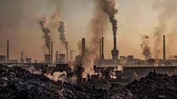
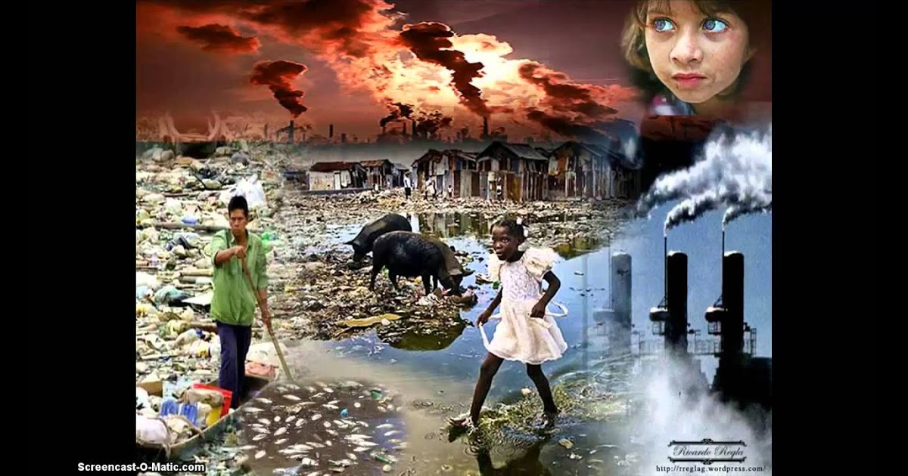

Prácticamente todas las actividades humanas transforman el medio natural y provocan cierto grado de degradación. No obstante, algunas resultan particularmente importantes:
¡PIENSA A QUIENES Y A CUANTOS AFECTAMOS!
Agricultura y ganadería:
Pérdida de bosques, aumento de la erosión y disminución de la producción de oxígeno. Desaparición de la flora y la fauna naturales. Impacto visual por la parcelación de los terrenos.
Pesca:
Disminución numérica, o incluso extinción, de diversas especies marinas.
Extracción de recursos:
Erosión del terreno, contaminación del suelo y del subsuelo.
Industria:
Contaminación atmosférica y de las aguas, lluvia ácida, gases de efecto invernadero.
Producción de energía:
Impacto visual, contaminación atmosférica (centrales térmicas), destrucción de ecosistemas terrestres (presas), generación de radiaciones y residuos muy peligrosos (centrales nucleares).
Urbanización e infraestructuras:
Transformación del paisaje, pérdida de ecosistemas, erosión del terreno por obras diversas, contaminación atmosférica y de aguas, y generación de gran cantidad de residuos.
Guerras:
Poco consideradas desde el punto de vista del cambio medioambiental, los conflictos bélicos provocan graves daños ecológicos, especialmente cuando se emplean armas químicas o nucleares.

